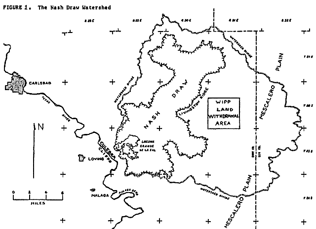
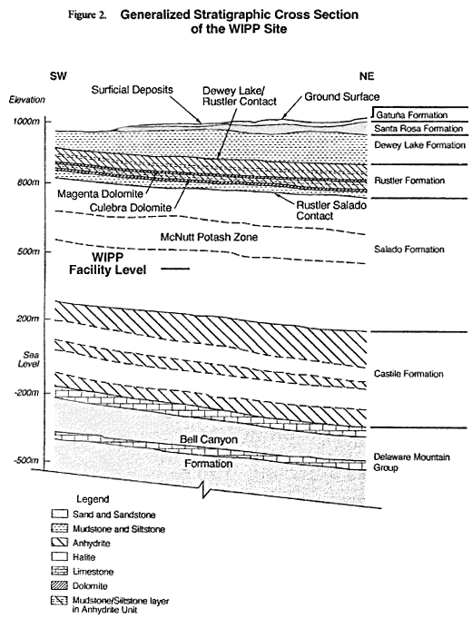
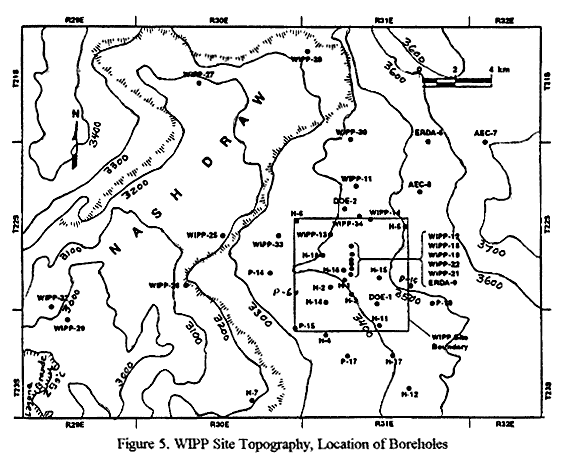
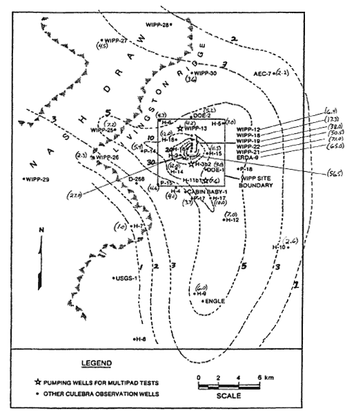

![20120724 - 7-24-2012 The More We Learn - quote from David Rockfeller -_thumb[2]](../assets/images/20120724---7-24-2012-the.jpeg)


⚛ ⚛ ⚛ ⚛ ⚛ ⚛ ⚛ ⚛ ⚛ ⚛ ⚛ ⚛ ⚛ ⚛ ⚛ ⚛ ⚛
⚛ Note: In several places in his paper, Dr. Snow states that a near-surface or above-ground, centralized, monitored retrievable storage facility, possibly at WIPP, is now the only option to disposal at WIPP. However, it is CARD's position that the WIPP waste should remain in monitored retrievable storage at the generator sites while research is pursued to find a truly safe method for final disposition of this waste. The Department of Energy has stated that the WIPP waste could stay safely at the generator sites for at least another 50 years. CARD believes that the risks from transporting 35,000 shipments of waste around the country to WIPP or another centralized facility are great and outweigh the risks from properly storing the waste where it is generated or currently stored. (editor: http://cardnm.org/karsttecfrm_a.html) ⚛
The (Short Version) of this paper is also available in the Non-Technical Section.
Summary
At WIPP, radioactive waste is being disposed of permanently in drums and boxes placed in rooms excavated in the Salado salt beds. Like all other excavations below the water table, the repository will saturate, and dissolved radioactivity can ultimately escape via boreholes, shaft.s or fractures to the overlying Rustler evaporites. The most evident aquifer in the Rustler, the Culebra dolomite, is claimed by DOE to provide such slow transport that the Rustler can be considered an adequate barrier to waste migration. But performance assessment modeling, based on insufficient exploration data, unsupportable deductions and faulty assumptions led to that claim. This paper asserts that the Rustler formation overlying and down-gradient of the WIPP repository will not provide the claimed geologic containment because karst conduits are present that will facilitate rapid, ephemeral flow. If disposal is not halted and timely rectified, escaping radioactivity may reach Nash Draw within a thousand years, contaminating the Pecos River and Rio Grande. Until a suitable disposal site or method is engineered, a monitored retrievable storage facility may offer the only alternative.
Introduction
In 1998, the Department of Energy (DOE) became certified to dispose of transuranic (TRU) waste transported from military generation sites around the country, placing it irretrievably in rooms excavated in deep salt beds beneath the Waste Isolation Pilot Plant (WIPP), Carlsbad, New Mexico, and is presently expanding the facility. The urgency to eliminate surface stockpiles and to decontaminate bomb- making plants and test facilities at Rocky Flats, Argonne, Arco, Mound, Oak Ridge, Hanford, Savannah River, Nevada Test Site and the Lawrence Livermore and Los Alamos Laboratories gave stimulus to the conclusion that WIPP would provide safe, permanent isolation, that excessive plutonium and other radionuclides will not be conveyed in solution by groundwater moving from the repository through covering rocks to the accessible environment (surface or 5 km distant) in less than the 10,000 years mandated by 40CFR191.
Deep geologic disposal has seemed to be the answer. Natural radioactivity in the biosphere results in mild carcinogenesis that humans accept, while uranium ore bodies that could not be tolerated are shielded by intervening thicknesses of rock. Low solubility of ore minerals, and dilution and slow transport as solutes in groundwater have protected us. But in the last half-century, mining and processing of uranium ore, fission, bomb manufacture, and waste reprocessing have concentrated uranium and transuranic elements at numerous accessible places. It is logical to reverse the destination of the radionuclides, such as plutonium and americium resulting from bomb making, by burying these wastes deep in the earth. But such geologic disposal methods have proven so difficult to validate that every nuclear nation remains burdened with dangerous stockpiles of spent fuel, unneeded bomb triggers and contaminated materials. WIPP is the first and only permitted disposal facility in the world for TRU wastes. But because adequate containment conditions were not proven at the WIPP site, the facility does not make the case for safe geologic disposal. A single monitored retrievable surface or near-surface facility may be the most prudent U.S. repository until a better technology develops.
Various geologic media have been studied as potential hosts for the permanent disposal of U.S. radwastes. Crystalline rocks, including granite, basalt and metamorphics, though possessing low permeabilities that assure slow transport rates, were disqualified because all sites are water-saturated and connected to potable water sources. Though pervasive but tight fractures are the typical conduits for leakage, it has never been possible to prove the absence of preferred pathways, such as fault zones, that would shorten travel-times to streams or aquifers. Since 1957, rock salt has been considered a favorable medium because of the perception of a nearly impermeable, self-sealing nature. However, abandoned salt mines near Lyons, Kansas were disqualified in 1972 because the overburden rocks are perforated by many old drill holes. Salt domes of the Gulf Coast region were considered but disqualified due to the probability that fluids in a sealed cavern subject to creep closure would be ejected, ultimately reaching overlying aquifers. WIPP is similar in these regards. Bedded salt near Hereford, Texas failed as a candidate by decree of an economy-minded Congress, together with the candidate site in basalt at Hanford, Washington. That left. for active investigation only a site in welded tuff at Yucca Mountain, Nevada for civilian power-plant radwastes, and bedded salt at WIPP for military radwastes. Though high permeability and deep drainage of the fractured tuff at Yucca Mountain provides an unsaturated environment, remaining uncertainties of future climate conditions, faulting, volcanism and seismically-driven hydrothermal upwelling (Hill, et. al. , 1995; Hill and Dublyansky, 1999) cast doubts on the adequacy of waste isolation there.

The WIPP site, selected in 1975 (U.S. DOE, 1997, p. 2-11), survived the purging of salt sites while the Atomic Energy Commission clothed the early investigations in military secrecy. At the onset of controversy concerning karst features over the WIPP site, the consulting role of the U.S. Geological Survey was discontinued, making Sandia National Laboratories the sole consultant to DOE. Technical oversight improved when the 1987 No-Migration Petition to the new EPA disclosed project weaknesses. Since then, DOE has maintained a mission-oriented relationship with its consultant, Sandia National Laboratories. Consequently, serious faults in the investigations have been perpetuated from the early 1980's through the 1996-1998 certification period (U.S. DOE, 1996).
The Hydrogeologic Setting of WIPP
The underground facility lies 2,150 ft. below the surface and is ultimately to measure 4350 by 5050 ft. in dimensions, a significant part of the Land Withdrawal Area (LWA, Figure 1), often referred to as the site. The geology has been summarized by Powers, et. al., (1978) and Brinster (1989).

As Figure 2 shows, there are about 1300 ft. of salt and anhydrite beds of the Salado Formation above the repository. Above the salt is the Rustler Formation (Figure 3), comprised of thick beds of anhydrite interspersed with salt and dolomite, dipping about 10 ENE. The Rustler is 400 ft. thick at P-10 beneath the east boundary of the LWA, thinning to 302 ft. at P-6 beneath the west boundary. Above the Rustler lies the Dewey Lake Formation, 199 to 534 ft. of redbeds of fine-grained, uncemented muddy sandstones and siltstones. Overlying the Dewey Lake is the Santa Rosa formation, 0 to 217 ft. of coarse sands and conglomerates interbedded with shales, mainly beneath the eastern half of the LWA. Windblown sand masks most of the semi-arid surface of the Mescalero Plain, which slopes gently west to Livingston Ridge, the edge of Nash Draw (Figures 1 and 5). It is Doe's position that any contaminated brines that escape the repository will be conveyed upwards via exploration boreholes through the Salado but not to the surface. Rather, contaminants are predicted to move laterally via the thin Culebra dolomite aquifer in the Rustler (Figure 3). On the site, an ill-defined water table is in the Dewey Lake redbeds, sloping westerly. But in the Culebra, the piezometric surface slopes westerly,
southwesterly or southerly, depending upon place and time of observation. Because bedding dips northeasterly, nearly in the opposite direction, the water table offsite to the west of the LWA is in the Rustler, leading to outcrop areas in Nash Draw, 1.1 to 4 miles beyond (Figure 1), or to Malaga Bend on the Pecos River, 13 to 15 miles southwest of the LWA. Nash Draw is a subsidence trough formed by dissolution of the underlying Salado salt, which caused fracturing, brecciation and subsidence of the overlying Rustler (Kelly, 2000). Uncertain regional boundary conditions and a great range of transmissibilities across the site leave doubts about the paths and destinations of contaminants that may escape the repository, thus uncertainties of the time to reach outlets or the nearer accessible environment, nominally the subsurface limits of the LWA.
Performance Assessment
Repository performance is judged according the radioactivity accumulated over 10,000 years outside the accessible environment boundary. Limits in Curies based on health effects at a surface body of water are prescribed by the EPA in 40 CFR 191.13 for all radionuclides in the expected inventory of materials disposed. Performance Assessment (PA) is a modeling exercise of prodigious complexity (Helton, et. al., 2000), designed to take into consideration all physical properties of the wastes, the repository and its geologic environs, including effects of climate and man- made perturbations. It is a collection of models, each of which embodies a time-dependent mathematical representation, a method of numerical evaluation and a computer code. There is a model to represent the two-phase inflow and outflow of brine and gas between a sealed repository and anhydrite beds in the salt a few feet above and below the repository horizon. There is a model to calculate the hydrogen that will evolve from the reaction of brine with disintegrating steel drums and cellulose in the waste. There is a model to calculate the changing radionuclide inventory as it decays, dissolves in the brine and is absorbed by engineered backfill materials. There is a model to describe the groundwater flow in the Culebra dolomite aquifer (assumed to be the sole conduit) above the repository, and a model to calculate transport of each radionuclide species through time and distance along Culebra pathways. PA incorporates several different scenarios, such as no human disturbance during the 10,000 years, or mining of potash in the overlying McNutt Member of the Salado, or oil-well interceptions of the repository and/or pressurized brine reservoirs in the underlying Castile Formation, plus implications of borehole drilling, plugging and blowout prevention. Because a single PA requires many man- years of effort and millions of dollars worth of Cray CPU time, few have been done. Scores of physical properties are factors in the computations, many of which are ill-defined, so are best described as distributions. The methods of Monte-Carlo sampling are used, several hundred iterations providing a range of answers, each a distribution function of the cumulative releases over the 10,000 years. The proportion of iterations that satisfy the EPA criteria measures the probability of acceptable results. Any scientist has to admire the elegance of the computation procedure even if his expertise covers only a part, while the manager or politician reveres that which is understandably baffling. But scrutiny reveals that underlying the mathematical elegance and the comprehensive array of data manipulated are numerous assumptions, many of which have over-riding significance to the results. Some of the hydrogeological assumptions violate the perceptions of qualified critics, such as Anderson, 1978, Ferrall and Gibbons, 1980, Barrows, 1982, Snyder, 1985, Phillips, R. H., 1987, Snow, 1998 and Hill, 1999, and arguably differ from actual conditions. Management has exerted its will to succeed in the licensing process, influencing the scientific staff to adopt models and select studies favorable to Doe's objectives, biasing the results of PA. A critic must use Doe's own data and draw inferences from his own observations to show where investigations have gone astray. There are areas of geology, rock mechanics and hydrology that deserve re-assessment in that light.
Contaminated Brine Discharge from the Repository
The starting point for all PA model realizations is the calculation of brine inflows aft.er the repository is filled and sealed. As noted by Brinster (1989, p. II-19), the Salado is not homogeneous salt, but rather, “ . . . consists of salt rhythmically interbedded with anhydrite, polyhalite, some glauberite, and some thin mudstones.” The salt was formerly believed to be so impermeable that the rooms would remain dry, but the appearance of small brine seeps soon aft.er opening the first research rooms showed that DOE must contend with a wet waste environment. Excepting direct recovery of solid waste carried to the surface along with cuttings from inadvertent oil wells, all other scenarios entail radionuclide transport via flowing groundwater. The project might have been aborted if DOE had been more respectful of the historic problems of water in salt and potash mining. At WIPP, brine that accumulates will eventually saturate downdip openings, corrode containers and packaging and dissolve radionuclides. Generated gas will collect updip. The computed brine inflows depend on the measured permeabilities of fractured anhydrite beds above and below the repository horizon, but only the 3.0-ft. thick Marker Bed #139, 9.5-ft. below the repository floor, Marker Beds A and B, totaling 0.7 ft. thick and lying 4.3 ft. above the roof and the 0.6-ft. Marker Bed #138, 39.2 ft. above the roof have been modeled as inflow contributors. That limitation was due to the assumed extent of the DRZ, the disturbed rock zone (fractured salt) expected to form around the rooms as they close. The consequences of gas generation, cavity pressurization and two-phase outflows of brine and gas through those four anhydrite beds indicated (by PA) that the undisturbed scenario poses no hazard of a significant breach or accumulation beyond the accessible environment.
The fallacy of that conclusion stems from a misconception of the behavior of the Salado overburden. The 13-ft. high by 33-ft. wide rooms will be short-lived. Large open fractures appear in the ceilings of all rooms within months of mining. Several roof-falls and floor heaves have already occurred, so an extensive array of roof bolts has been installed to delay the failure of the remaining experimental rooms long enough to fill them with drums. These, and all future rooms will suffer collapse of major roof slabs bounded above by weak clay-bed partings. Such falls will crush the drums, and liberated waste will penetrate the fractures. DOE has assumed roof fractures extending upwards only to Marker Bed #138, but as creep subsidence incorporates whole panels and then the repository width, horizontal slip and openings will occur on successive higher clay seams, most bounding stiff anhydrites. Horizontal slickensides observed in Rustler clays at the Exhaust Shaft. (Holt and Powers, 1986) manifest the shear failure to be expected in Salado clay seams, a consequence of local subsidence. Inclined fractures laterally limiting roof slabs will interconnect the rooms and panels via the slip surfaces and fractured anhydrite beds situated farther above the repository, each of which will contribute to increasing inflows of brine. Experience at potash mines in similar salt sequences (notably at K-2 Mine in Saskatchewan) indicate that such roof behavior is typical. At the Canadian mines, the fractures sometimes breach the top of salt into an aquifer, causing inflows that flood the mine (Tofani, R., 1983, Van Sambeek, 1993). Aft.er shaft. leakage, such roof breaching is the next most common cause of flooding of salt and potash mines, all of which ultimately flood because they lie below the water table and have inhomogeneous, deforming roof-rocks. Such subsidence experience invalidates the assumed limited height of the disturbed rock zone around WIPP rooms and the continuous plastic creep and room closure envisioned by the designers. Fundamental to subsidence prediction at WIPP is that ultimately, inclined fractures, as shown by MacIntosh (1990) will bound a de-stressed region extending over entire panels of rooms. Because each anhydrite bed (numbering about 40 above the repository) has a thin, weak clay parting at each of its faces, the bedded, subsiding roof will be split into many independent beams, like a glu-lam beam that has come unglued. The deflections and accompanying inclined fractures will drain not just Marker Beds #138 and #139, plus A and B, but many more anhydrite beds above them, increasing the inflow rates accordingly. Some fractures extending up from the repository will not anneal, but because of movement and flow, will remain open for gas and brine leakage during the years of pressurization by closure and gas generation.
Far-field pore pressures approaching lithostatic in salt not only drive the brine inflows along the anhydrites and clays, but also ensure that little subsequent outflow follows the bedding during pressurization. In PA, the Salado above anhydrite marker #138 up to the Rustler is assumed to be salt with very low permeability distributed uniformly around a median of 6.1 X 10-20 ft..2. Utilizing Darcy's Law (Helton, 1991, p. 83 and Table 4), flow upward across the 1300 ft. of salt (about 85%) and fractured anhydrite beds (about 15%) up to the Culebra dolomite aquifer was computed as though the interval is a continuous porous medium. What is significantly wrong with the model is that it assumes no fracture conduits reaching high above the panels. Rather, as pressures in the sealed repository rise, gasses will cause the subsidence fractures to propagate unstably to higher levels where smaller rock stresses prevail, facilitating subsequent brine leakage to the Culebra and other aquifers much sooner and at higher rates than the PA model predicts. Because of the non-conservative assumption that the Salado is structureless, and consequently because the rock mechanics model is unrealistic of long-term subsidence, the conclusion from PA calculations that the undisturbed scenario is innocuous has to be wrong. Histories and subsidence behavior of the analogous Salado interval above the McNutt horizon at nearby potash mines of Eddy County, NM could have been studied, reported and modeled, to derive more realistic WIPP- site subsidence predictions. Sandia rock mechanics wanted to do that at the Horizon (Amax) Mine (Crosser, 1998), but funding was denied them. It is common geotechnical experience that in a significant proportion of dams, tunnels, aqueducts or deep mines, if there are potential but unknown geologic defects or mechanical inhomogeneities, failure will occur by reason of unexpected hydrologic effects. Therefore, in sensitive and doubtful situations, especially conservative assumptions are appropriate. Instead, WIPP modeling employed idealistic assumptions of continuous media, when discontinuous (fracture) properties would have been appropriate. The conservative expectation is that subsidence fractures at WIPP will propagate first by gravity, then unstably upwards to the Rustler due to the gas pressure generated in the repository, followed by contaminated brines aft.er the gas has dissipated and rooms become saturated. Sealed shaft.s and boreholes nearby will probably retain their integrity unchallenged, because fractures will provide easier egress for fluids.
There is currently a concentrated leakage occurring into the Construction and Salt Handling Shaft. from the top of Dewey Lake redbeds at 20 to 70 ft. in depth, thence into the repository, believed to arise from runoff at the parking lot. In European potash mining experience, such incipient karstic shaft. leakage has been found to be irreparable. The first drop of water signals the eventual flooding of the mine.
Because human intrusion is a potential cause of repository breaching during any 10,000-year regulatory period, one of the tenets of radwaste disposal is that a candidate environment should be free of valuable natural resources that could stimulate future explorations. Since the LWA is underlain by exploitable potash beds in the McNutt interval,

(Figures 2 and 4) and is surrounded by oil and gas wells, the scenarios of one or more inadvertent interceptions of the waste rooms by future drill holes are very credible. PA calculations suggest that the raising of contaminated cuttings to the surface poses the greatest (though minimal) threat to posterity. Direct flows of contaminated brine along boreholes open to the surface has been minimized in PA by assumptions of borehole plugging by future operators. Utilizing EPA modeling guidance that borehole permeability should be “ . . . typical of a borehole filled by the soil or gravel that would normally settle into an open hole over time,” about 3.23 x 10-11 ft.2, the maximum calculated rate of flow to the Culebra was estimated to be about 2800 ft.3/yr. (Helton, 1991, p. 24), a magnitude unrealistic of the rates that could be driven along an open borehole that intercepts a saturated repository at near-lithostatic pressures, or along fractures initiated by subsidence or oil-field water-flooding (Bredehoeft., 1997). Small values are appropriate to sealed boreholes (plugged with concrete or mud) that become leached and porous as cement deteriorates over years, but axial seepage may maintain a conduit outside the seals. Thus, flow rates to the surface and the Culebra have been unconservatively discounted for human-intrusion scenarios, as well as for hydrofracture and subsidence-induced fracture conditions.
Regional Flow in the Rustler Formation
Transport modeling entails many parameters, known or approximated. In order to model the paths and rates of transport of radionuclides in groundwater, there must be defined all necessary groundwater fluxes, boundary conditions, material properties and chemical processes. In this instance, a boundary following divides encompasses about 2300 square miles to form the lateral limits, while the top and bottom of the Culebra dolomite, 23 ft. thick, form the vertical limits. Fixed hydraulic heads are assigned at the lateral boundaries, commensurate with measured or deduced heads, and the model limits are defined as either no-flow (impermeable) or discharging (permeable) boundaries. If arranged conservatively, those boundaries are so distant from the LWA that errors in selecting heads and flow properties there should have little effect at the LWA perimeter, the compliance boundary. Heads within the model, determining gradients everywhere, have been adjusted according to measured heads at wells penetrating the Culebra dolomite. If the PA model was grossly correct, that only regional flow based on current heads in the Culebra mattered, the effort might justify minimal transport via the groundwater pathways. DOE relies upon low matrix-dominated permeability of the Culebra (modeled as a single fracture) in its claim that the Rustler is thus a barrier to significant flows to the accessible environment.

The facts reveal the Rustler to be a much more complex aquifer, in terms of properties and boundaries. As Figure 5 shows, the topography slopes gently from a divide 7 miles NE of WIPP westerly towards Nash Draw, which wraps around the NW, W and SW sides of the LWA. Nash Draw is 20 miles long, bounded on the east by a ragged scarp called Livingston Ridge. Dissolution of the Salado salt at the base of the Rustler has produced a brine aquifer beneath Nash Draw in the thick zone of insoluble rubble formed by subsidence and brecciation of the overlying units (Kelly, 2000). But the Rustler mainly discharges at higher levels and to the surface in the vicinity of the salt pan, Laguna Grande, where it evaporates, at least in today's climatic setting (Phillips, 1987). The lake bottom is a deposit of at least 55 ft. of fine gypsum, attesting to a long-term anhydrite source, distinct from the sodium chloride of Salado origin discharging to the Pecos River via the brine aquifer (Phillips, 1987). Phillips documented the ephemeral nature of discharge from a lake north of Laguna Grande called Laguna Pequena (W/NW Sec. 3, T23S, R29E), recording a flow of over 100,000 gallons per minute into Laguna Grande on September 5, 1984 aft.er a record rainfall event stimulated spring flow. There was no surface inflow to Laguna Pequena, and the outflow diminished rapidly aft.er the measurement (Phillips, 2001). Phillips (1987, pp. 244-248) makes a convincing geochemical argument for a Rustler source of most water discharging to Laguna Pequena and Laguna Grande, which must be the long-term destination for any WIPP-site groundwaters.
The current southerly gradient beneath the LWA, and a fairway of high Culebra transmissibility southwards through DOE-1, directs modeled Culebra flow paths from the repository southward into regions of low transmissibilty and to a distant discharge area on the Pecos River (Malaga Bend). But had they incorporated the low heads at WIPP-29 (2968 ft.) and Laguna Grande (2950 ft.), modeled paths would have turned west to Nash Draw (Phillips and Snow, 1998, p. A-8). Gradients in the Rustler are centripetal to Laguna Grande (Kelly, 2000), consistent with the regional evidence that the Rustler drains westerly to Nash Draw. Computed travel times through the Culebra would have been much shorter if model heads had been realistically represented.

Another significant and erroneous assumption used in PA is that the Culebra dolomite is the only aquifer of concern for radionuclide transport from the repository to the limits of the LWA. Drill holes through the Rustler encountered mainly anhydrite, a dense, hard, impermeable rock in its intact form, thus the Magenta and Culebra dolomites were considered the only persistent aquifers that could be tested and characterized (See Figure 3). During shaft-sinking, Chaturvedi and Channel, (1985, Plate 1) found that there is a steep fracture with a dissolution-enlarged opening across the brittle Unnamed Lower Member anhydrite (below the Culebra), so the dolomites cannot be confined. Figure 8, illustrating that fracture, suggests not only open-conduit flow across the Culebra, but also that karst channeling must have occurred at the top of the Salado salt directly above the repository. At various levels in the 250-550 ft. thick saturated Rustler and Dewey Lake interval there may be infrequent, large-capacity fracture-dissolution conduits not usually intercepted or characterized by the vertical drillholes completed for testing the Culebra. Thus, the simplistic, two-dimensional PA model of continuous confined flow in the Culebra dolomite (23 ft. thick) fails to characterize the entire Rustler, which can capture repository discharges via boreholes or fractures, and channel more rapid open-conduit karstic flow. A tiny fraction of the formation's volume, as cave passages, may occasionally convey the preponderant fraction of the discharge, at great rates unrepresented by Doe's modeling of an intact, thin, matrix-dominated Culebra dolomite (Hill, 1999).
The Culebra dolomite has been modeled as a continuous porous medium cut by a single horizontal fracture, an erroneous conception argued to be conservative. First of all, the horizontal fractures are bedding plane breaks on shaley partings without significant hydrologic importance because they are tightly closed until unloaded or sampled by coring. As may be seen at Culebra Bluffs, there are numerous vertical and inclined fractures (Swift., 1992). Many are enlarged by dissolution near the surface, and these are probably good conductors, but DOE has never tested their individual properties in the buried Culebra. They form two orthogonal sets trending NE and NW (a tectonic pattern pervasive throughout the Delaware Basin). Cores reveal their antiquity by mineral infillings of gypsum that render the fractures locally impermeable, indeed, partitioning the matrix into isolated permeable blocks, the probable character of the Culebra east of the LWA (as at P-18). Inclined fractures are also present at Culebra Bluffs and probably wherever differential subsidence has occurred over regions of salt removal. In the subsurface, inclined fractures are also gypsum filled, but to a variable degree due to dissolution. Westward across the site, the proportion of fractures lacking gypsum infillings seen in drill cores increases (Ferrall and Gibbons, 1980), and gypsum infillings are absent at Culebra Bluffs. Neill, et. al, (1998, p.11) suggest that fracture openings formed due to dissolution of Rustler salt and consequent deformations. It may be that within the LWA, Culebra flow is not controlled by either matrix permeability nor by fracture permeability, but by elongate dissolution channels formed, perhaps at the intersections of fractures and the Culebra contacts. If DOE had fully characterized Culebra fracture flow properties by slant-hole coring, dissolution conduits would also have been found and described, and by necessity, modeled.
Tests have revealed such a great range of transmissibilities (T = hydraulic conductivity times aquifer thickness) near wells completed in the Culebra that the degree of channeling must be the main variable across the site. East of the LWA, measures are on the order of 10-3 ft.2/day. It is on the order of 0.1 ft.2 /day on site, on the order of 102 ft.2/day west of the LWA, and 103 ft.2/day in Nash Draw. Thus T increases westward by five to six orders of magnitude (Phillips and Snow, 1998, p A-3). Many individual tests give different transmissibilities, depending upon the observation well used to interpret drawdowns. Of 42 wells tested, high measures were reported at wells WIPP-13, H-6, P-14, H-11, DOE-1 and DOE-2 (Figure 5). Local and directional variability is typical of karst regions with widely distributed solution channels, reflecting chance proximity of each test well to the conduits. The observed irregular increase of T from east to west reflects a systematic increase in the dissolution of fracture fillings, coalescence of smaller channels into larger conduits and the development of cross-connecting fractures and channels to other Rustler strata (Hill, 1999, Neill, et. al., 1998). Since pumping tests in the Culebra produce greatly different responses at adjacent observation wells, reflecting Rustler anisotropy and heterogeneity, the conservative approach to modeling would be to utilize at a site the greatest interpreted transmissibility, or at least the geometric mean of directional values. Instead, DOE has arbitrarily assumed transmissibility values at well sites within 1.5 miles of the center of the repository that are one to two orders of magnitude smaller than the highest values revealed by the hydrologic tests (Phillips and Snow, 1998, p. A-3). The consequence is that computed travel times across that first 1.5 miles from the source are exaggerated by similar magnitudes.
Consistent with Doe's assumptions that Culebra flow is confined and that transmissibility is due solely to matrix or hypothetical horizontal fracture properties, PA modeling was conducted with a continuous T-field interpolated from 39 selected observations. The mathematical method assumes that T is a continuously varying point-function, an invalid procedure in the presence of occasional large, discrete solution conduits of unmeasured, thus uncertain conductivity, randomly placed with preferred orientations due to fracture controls and former hydraulic gradients. At WIPP-33, a site 0.54 miles west of the LWA, a hole drilled in the center of a sinkhole intercepted a cavern in the Dewey Lake and four caverns in the Rustler as deep as the Magenta dolomite. DOE neglected to test that well hydrologically nor subsequently to monitor it. Though only that test hole and one shaft. exposure (Figure 8) indicate the actual geometry of parts of the karst conduit system, that deficiency stems from an apparent unwillingness to explore for such features. Prudence should have demanded a conservative interpretation of the potential consequences of karst, at least until the necessary investigations were done.

Flows were computed according to the present-day fresh-water head (depending upon pressure, density and level) distribution in the Culebra, whose gradient is generally southerly over the LWA, tending to direct discharge towards Malaga Bend. The gradient in the overlying Magenta dolomite is westerly, as may also have been the gradient in the Culebra before pumping and drainage to the shaft.s altered it in the 1970's and 1980's. Culebra heads have been systematically rising for years, particularly since the sinking of the Air Intake Shaft. and the stanching of copious inflows to the repository that occurred. As the synoptic data in Figure 6 indicates (Snow, 1998), the heads at all well-recorded observation wells completed in the Culebra continued to rise during more than five subsequent years. It is possible that a primitive westerly gradient may ultimately be restored long aft.er repository closure, directing the gradient for all Rustler flows towards Nash Draw. The gradual rise indicates that on that scale and in that five year time span, the Culebra itself behaves as a continuous aquifer of modest transmissibility, at least at the points of observation where wells are completed. If large conduits are present at other levels or places, there could be transient head fluctuations that occur mainly in such a system of solution caverns, not recorded on hydrographs of the wells because none penetrate the karst conduits, nor were they instrumented for brief excursions.
Mercer (1983), Chaturvedi and Channel (1985, p. 40) and Brinster (1989, p. IV-75) discussed the fact that the Magenta has freshwater heads as great as 155 ft. higher than that of the Culebra within most of the LWA (except at WIPP-13), but that the two dolomites have coincident heads from the west boundary of the LWA to Nash Draw. Such a head difference at locations within the LWA may be wholly post-disturbance, reflecting short-term Culebra confinement and perhaps the sealing of old karst features between the two strata.
Additional Evidence of Karst
The strongest direct evidence of a saturated karst system that will influence flows from WIPP was the penetration of the five caverns below the sinkhole at WIPP-33, located about 2600 ft. west of the LWA. Those caverns totaled 29.5 ft. in height, occurring in the Dewey Lake Red Beds, and in the Forty-Niner and Magenta units of the Rustler (Sandia Labs, 1981, Phillips and Snow, 1998). Because the WIPP-33 sinkhole is the most westerly of four in a chain aligned eastwards 2450 ft. to within 1000 ft. of the LWA, it can be surmised that an extensive conduit underlies the chain. A similar chain of sinkholes is aligned E-W just north of the LWA boundary. WIPP-14 there revealed 74 ft. of residual clay, much gypsum, but no caves, perhaps because the hole was drilled eccentric to the sinkhole formed over collapsed caverns. At both sites, trenching and augering done by Phillips (1987) revealed conical depressions in the near-surface Mescalero Caliche, culminating at a chimney, proving that they are sinkholes, not wind-deflation features. Phillips' investigation of numerous depressions on and near the LWA, many filled with sand, showed that there are several true sinkholes on site, including some that have been observed (e.g., during September, 1984) to conduct storm waters rapidly into the underlying formations. Coincident with several surface depressions in the LWA, Barrows (1983 and 1985) discovered anomalous gravity lows probably due to gypsification of large volumes of anhydrite, or to karst voids. Phillips (1987) showed that the gravity anomalies coincide with solution chimneys through, and downwarping of, the Mescalero Caliche horizon.
Throughout the Rustler formation, there are many instances, on and off-site, of drill holes that encountered dissolution products, including breccia or rock fragments displaced from higher strata, or residual clays derived from the dissolved salt beds and eroded from adjacent clastics. Phillips (1997) and Hill (1999) have summarized the drill data indicative of karst, such as those at WIPP-13, 14, 19, 33, and H-3, and the anomalous drawdowns, likewise consistent with karst. Gypsum replacements of former anhydrite beds have been formed by freshwater recharge (Snyder, 1985). Westward freshening of Rustler waters can best be reconciled with westerly flow and vertical recharge. Furthermore, the youthful ages of some waters sampled from the Rustler can be attributed to rapid, local infiltration (Hill, 1999, pp. 54,55).
DOE has relied on advice contradicting the argument that clays and breccias in the Rustler evaporites are residual materials consequent to salt dissolution. Several geologists, notably Ferrall and Gibbons (1980), Barrows (1982), Chaturvedi and Channel (1985), Lowenstein (1987), Phillips (1997) and Snow (1998) believe that these are residual materials deposited underground at channeled horizons where salt or gypsum formerly occurred in the Rustler. As Figure 3 shows, the formation thickens progressively eastward, consistent with the thicknesses of salt removed by dissolution that has progressed eastward from the edge of the basin. Conversely, the thickness changes could be due, as Holt and Powers (1988) allege, to non-deposition of the salts, but as Lowenstein points out, there are no other stratigraphic or lithologic changes of the Rustler across the site. Clays and channel fillings found by Holt and Powers (1986) in the walls of the Exhaust Shaft. have been attributed by them (1988), and other DOE contractors and consultants, to alluvial fillings of surface channels contemporaneous with (Permian) deposition. This issue is crucial to the controversy because if residuum has replaced portions of the salt formerly in the Rustler, the dissolution process has been pervasive and perhaps continual, and occasional open conduits are an inescapable corollary, even if they are locally obstructed by residuum.
Snow (1998) has described similar detrital deposits partially filling modern dissolution channels in salt over the flooding K-2 potash mine in the Prairie Formation, Saskatchewan, but in beds 3000 feet below the surface. The modern Prairie channels have fill features, such as graded and foreset bedding and particle imbrication that are consistent with both environments, surface and subsurface. Permian salt sequences at the Canadian site are overlain by thick alluvial redbeds of clay and sandy clay, in which slickensides (internal fractures) have all orientations. These are presumably due to shrinkage and swelling by surficial desiccation and wetting, analogous to slickensides observable in swelling clay soils anywhere. But thin lagoonal clay beds imbedded within the Canadian salt sequence have desiccation shrinkage polygons, not slickensides, except where horizontal slickensides occur in places where differential mine subsidence has caused shear. If the Rustler clays were syndepositional with the anhydrites, the clays would display omni-directional arrangements of slickensides, not just coplanar with the beds. The one feature of the Rustler clays logged at the Exhaust Shaft. inconsistent with surface channel deposition is thus the presence of horizontal slickensides. At WIPP, they must have formed millions of years aft.er deposition, as underlying salt beds were locally removed by dissolution, causing deflections. Observed breccias that include rotated blocks of higher-level anhydrites imbedded in clay are incompatible with the low-energy channel environment typical of the evaporitic lagoon. For those reasons, it is evident that Holt and Powers have erred in deducing that the salt beds are missing from the Rustler because of non-deposition. Salt dissolution is, and has long been, active at the WIPP site. If doubt remains, the conservative alternative should be favored.
From hydrological testing of WIPP-area boreholes, there can be derived many indirect lines of evidence for a karstic origin of transmissibility measured in the Culebra dolomite. East of the LWA there is but one borehole (P-18), but it indicates water-tightness, presumably because gypsum fracture fillings remain complete. Westward across the LWA to Nash Draw, the increasing transmissibilities measured in the Culebra are consistent with salt bed removal and subsidence damage to the gypsum-filled fractures of the Culebra (Neill, et. al., 1998, p. 11), fracturing of the brittle anhydrites above and below the Culebra and with solution enlargements and karst conduits that coalesce downstream. Other hydrologic observations are consistent with karst, not matrix properties. These include anomalous drawdowns interpreted as high Culebra transmissibility between certain wells but not others (Phillips and Snow, 1997), or indicating anisotropy (Jones, 1992) related to structure (Barrows, 1982, Phillips and Snow, 1998). Lateral channel interconnections are also implied by equal Culebra heads at some adjacent wells, and vertical channels near some wells are indicated by equal heads in the Culebra and Magenta dolomites (Phillips and Snow, 1997).
Figure 8 (Chaturvedi and Channel, 1985, Plate 1) shows a local solution-enlargement of a vertical fracture in the Unnamed Lower (anhydrite) Member of the Rustler, exposed in the Construction and Salt Handling Shaft.. It proves that recharge has occurred across the Culebra, presumably to a solution channel at the top of the Salado. If not now plugged with residuum, a fracture of such dimensions could convey hundreds of gallons per minute at low gradients. It proves that karst has played an important role in groundwater movement directly over the repository, and must be presumed locally present. Conduits may be plugged at some levels, open and competent to transport escaping contaminated brine at higher levels and at later times.

To its detriment, DOE has shunned those concepts and avoided the necessary research, knowing that proof of karstic conduits would be fatal to the project. There is an affidavit (see Attachment A) from a former employee that Sandia hydrologists were forbidden to use the word 'karst', let alone investigate it. At one meeting attended in 1994 by all of the Sandia hydrologists, the writer personally raised for discussion the question of the significance of karst features. The senior hydrologist replied, "Oh, you mean the WIPP-33 problem", whereupon the subject was dropped. Because objective investigation has been stifled, the public should be skeptical of claims of suitable conditions for disposal.
When storm events recharge a mature karst aquifer, they commonly manifest a rapid rise of the water table. Yet for lack of such observations, water level transients are unknown in the Rustler Formation in the vicinity of WIPP. Not even the WIPP-33 hole has been converted to an observation well, an obvious choice for objective consideration of the implications of its deep, water-filled caverns. Finding that the Culebra dolomite was the only consistently conductive unit, DOE concluded early that it is the only significant aquifer, the Magenta dolomite having secondary importance. The spacings between partially opened or dissolved small-scale fractures in the Culebra are such that practically all test wells intersect those conduits, so the Culebra has appreciable permeability everywhere. Karst caverns are typically spaced hundreds to thousands of feet, so randomly placed holes have negligible probability of encountering them, or of measuring their conductivity. WIPP-33 was placed in a sinkhole, so does not reflect the sparse distribution of the network. Assuming continuous layer-cake hydrostratigraphy, the investigations done in support of Doe's certification application have largely neglected strata other than the Culebra, few wells having been completed at other levels. If open karst channels are most common near or above the water table, but not in the Culebra, they must be sought by drill holes targeting those levels. A slow recovery of water levels in the Culebra following drainage to the Air Intake Shaft. (Figure 6) does not rule out karst conduits at higher levels, unobserved either because they currently lie above the depressed water table, or simply because such conduits were not targeted for well completion. Hydrologic testing has done nothing to characterize the karst system clearly present in some places within the LWA, nor provided representative parameters for modeling. PA calculations were done for steady-state flow and transport through a continuous, low-transmissibility Culebra aquifer, when the karst conduit system, saturated in future at higher levels of the Rustler and Dewey Lake formations, may convey far greater, intermittent fluxes.
The salinity pattern from Culebra water samples (Phillips, 1997, Snow, 1998) is inconsistent with the current southerly gradient beneath the LWA, showing, rather, an irregular but progressive freshening westward, the likely primitive direction of flow in either matrix, fractures or solution conduits. As the water table is restored to higher levels, especially during wetter climates, it may saturate more karst channels, whose high conductivities and orientations will govern the flow directions and velocities, as will an altered gradient. Spring deposits of gypsum in NE1/4, Sec. 15, T22S, R30E, 240 to 280 ft. above the bottom of Nash Draw, that bear fossils of extinct Pleistocene mammals (Bachman, 1980) attest to higher water table levels during wetter climates, and confirm a westerly primitive flow direction. Anderson (2001) recognized that those gypsum spring deposits must reflect a dual hydrologic system. At low flows and water tables of the modern semi-arid climate (about 14 inches/year), the Culebra may be important, but at high flows and water tables of pluvial periods, likely to resume within 10,000 years, a karst system becomes more active. F. M. Phillips (1995) testified to the EPA that wetter climates of the past have increased recharge by at least an order of magnitude.
Many surface features within the LWA indicate karst. Closed topographic depressions have long been interpreted as sinks (Melton, 1934), especially if aligned. Stream channels are virtually absent at WIPP and the few short arroyos terminate at closed depressions. In some, storms produce ponds that disappear within a few days (Phillips, 1987, p. 86). Because wind-blown sand mantles much of the surface and fills most depressions, percolating rainwater is protected from evaporation. Drainage conduits (swallows) beneath the cover have been revealed by trenching (Phillips, 1987). Barrows (1983, 1985) found gravity anomalies within the LWA as well as beneath the WIPP-14 trend of nine sinkholes, close to the north limits of the LWA. Influent fresh water alters anhydrite to gypsum, producing these gravity lows, and the coincident surface depressions reflect its dissolution and the erosion of overlying Dewey Lake Beds.
A few feet below the plain is the 500,000 year-old Mescalero caliche, which has collapsed into Nash Draw. Testing the hypothesis that the caliche layer does not obstruct recharge in the vicinity of WIPP, Phillips (1987) drilled over 1000 auger holes in and around several of the depressions. Many of the topographic depressions within and around the LWA prove to be solution-subsidence dolines (sinkholes partially filled with alluvium), while others are wind-eroded deflation depressions. The caliche bed has subsided to form funnel shapes below some of the depressions, is dissolved to residual materials in many places, and is absent where solution pipes penetrate it. The deformed caliche surface proves local subsidence, and the solution pipes prove that infiltrating water has locally karstified the caliche. Phillips explored another mile-long karst valley without a surface water course that crosses the west boundary of the LWA, and a chain of four sinkholes at WIPP-33 indicating that water carves elongate E-W courses through the underlying Dewey Lake and Rustler beds, at least to the depth of the Magenta Dolomite.
Observations of storm infiltration at sinkholes prove that karst conditions exist in the subsurface. About ten inches of rain fell in the vicinity (registered at Loving, 18 miles WSW of WIPP) on September 18-19, 1985, causing the WIPP-33 sinkhole to fill like a bathtub to a depth of five feet, then disappear in a few days (Phillips, 1987, p. 86 and Greenwald, 1995). Water also ponded in the fourth depression east of WIPP-33 and rapidly infiltrated the ground. Such water can not seep away laterally from closed topographic depressions. It must follow karst conduits to the water table, joining an interconnected, perhaps locally obstructed conduit system that leads to outlets. Mature karst aquifers usually discharge at large-capacity springs along rivers or shores defining the base-level for the system, and have a strong influence on the water table everywhere upstream. Storm waters recharge such a karst system in a matter of hours, typically causing a sudden rise and a corresponding rapid increase of spring discharges, noted in days. Wells near WIPP have not been instrumented to provide hydrographs of the karst system, so none substantiate rapid water level rises, but one typical spring-flow event has been observed. On September 5, 1984, following a major storm, Phillips (1987, p. 228) witnessed transient flow into Laguna Grande amounting to at least 100,000 gallons per minute, the water welling up through the floor of nearby Laguna Pequena.

Figure 7, showing flow in a channel connecting the two is thus graphic proof of karst conditions in the watershed. The chemistry of the waters was consistent with the Rustler lithology of gypsum and dolomite, dissimilar to either the brine aquifer waters flowing on Salado salt to Malaga Bend or of the effluent from the nearby potash refineries. Such hydrologic and geochemical observations should have been collected routinely by Sandia Laboratories. Years of paper studies and computational modeling have remained unsupported by basic fieldwork. Since Phillips shared his field observations with Sandia hydrologists in 1990, it seems deliberate that Phillips' thesis, one of the few data sources for surface water hydrology at WIPP, was not cited in the CCA nor its background documents.
Phillips (1997), Phillips and Snow (1998), Snow, (1998) and Hill, (1999) have speculated on the geometry of the karst system at the WIPP site. Estimates of the travel-time for radionuclides that enter the Rustler depend upon the actual karst configuration. No tracer tests have been done to determine either potential karstic flow paths or rates. The five caverns at WIPP-33 provide reliable geometry. Elsewhere, it is inferential, as are the relevant but poorly defined boundary conditions. Phillips and Snow (1998, Figure 4) analyzed the transmissibility data and head distribution among the wells, conceiving that in plan view, there are preferred channel directions from the shaft. area southwards and northwestwards, and from the LWA westwards along three paths to Nash Draw. One passes through the NW corner of the LWA and WIPP-33, one follows the karst valley near the center of the W boundary, and a third lies just south of the S boundary. Snow (1998) speculated on the channel distribution in section, envisioning a phreatic karst in the vicinity of the primitive, pre-project-disturbance water table with an extensive vadose karst above it, all influenced by the systematic joint pattern and east-dipping bedding. The water table profile is envisioned to stair-step down-gradient towards the west. Hill (1999) interpreted the evidence in favor of an intrastratal (covered) karst, mainly confined to contacts of the Rustler dolomites but fed by steep infiltration channels. The westerly-increasing transmissibility may reflect conduits at several stratigraphic levels. The water-filled WIPP-33 caverns lie at and above the Magenta. Upon examination of the many drill logs, Phillips (1997b) found residual clays, open washed-out zones or lost core intervals strongly suggestive of dissolution at every stratigraphic interval from the Dewey Lake to the top of the Salado salt, but not necessarily features that are open today. Below the seldom-observed water table, progressively rising by many feet during years of recovery aft.er drainage to the shaft.s (Figure 6), a continuous large-scale karst probably does not occur in the Culebra, otherwise the recovery would have been rapid. But if the water level does rise rapidly in karst channels following storm recharge events, and then drains rapidly to spring outlets like Laguna Pequena, it has minimal effect on the water levels recorded in Culebra matrix. Conversely, the gypsum spring deposits extending 3500 ft. along the base of Livingston Ridge, containing bones of camels and teeth of Equis, may reflect a more durable level of the water table during a cooler or wetter period, and saturation of a higher interval of the karst as much as 240 to 270 feet thick. Not only is there is a deficiency of hydrologic data on the existing karst, but also on paleokarst relevant to the 10,000 year period of interest. Lack of data does not exonerate Doe's PA modeling for neglecting it.
Effects of Faulty Assumptions
There is no doubt that there is a karst system west of the repository that is both phreatic and vadose, as recorded at WIPP-33. Sinkholes common both inside and outside the LWA attest to vadose channels eroded (due to weak clay binder) both laterally and vertically through Dewey Lake clastics. As the Rustler salt beds were being removed, anhydrite was being altered to gypsum and subsequently dissolved. This can be seen at Culebra Bluffs, where the Culebra is intact, but gypsum and residual clays represent the anhydrites and salt. We do not know the current relationship of the karst aquifer to the west-sloping water table, which bevels the east-dipping bedding of both the Dewey Lake clastics and the Rustler evaporites. The lower bounds of the karst aquifer must be limited by the truncated ends of the five Rustler salt beds, but the gradations of karstification above it are unknown. Figure 8 proves that fractures have been dissolved to depths below the Culebra in the repository area, at least locally. Below the current water table, depressed by drainage and testing, the hydrologic data reflects only fine-textured dissolution conduits, like the opened fractures in the Culebra. Only the current saturated zone can be pump-tested today. But when storms recharge the aquifer or climate becomes wetter, the water table may rise to occupy a more mature karst with larger conduits, manifested by rapid transient flow, and restore westerly gradients controlled by those conduits. In karst regions elsewhere, channelization has been found to be most active at and just below the water table, which can rise appreciably into a far more transmissive vadose zone, due to increased recharge during wetter climates. For such reasons, Doe's ignorance of the karst system, and its failure to define and understand the water table and its controls has fostered simplistic assumptions and prevented construction of a valid long-term performance model.
Dye-tracing of groundwater flows in classic karst areas such as Dalmatia, Florida and Kentucky have demonstrated transient velocities exceeding a mile per day, flows that may even now be matched west of WIPP during storm recharge-discharge events like those of September, 1984 and 1985 (Phillips, 1987). Travel-time estimates through the WIPP karst (Phillips and Snow, 1998, Snow, 1998 and Hill, 1999) have ranged between 5 years and 500 years from the center of the LWA to the accessible environment in Nash Draw, but even these may not be conservative. The evidence of phreatic karst conditions and of vadose karst features within the reach of a rising water table in the Rustler formation gives assurance that if contaminants escape through the Salado during the next 10,000 years, the Rustler will not impede rapid solute movement.
PA and supporting papers belabor the transport issues of Culebra dolomite (Snow, 1995), when that unit plays, and will play a minor role to the karst system. It treats chemical retardation for each radionuclide species using laboratory distribution (Kd) coefficients derived with powdered dolomite. Even the critics (see Appendix 8.6 of Neill, et. al, 1998) of Doe's use of such coefficients don't acknowledge that if a karst system short-circuits the Culebra, solutes cannot equilibrate with dolomite matrix. PA applies an unjustified, continuous, steady-state groundwater flow model (such as that of Corbet and Knupp, 1996) to calculate specific discharges, then arbitrarily assumes 1% effective porosity to obtain seepage velocities. It attributes effective porosity to diffusion between a (non-existent) horizontal fracture and the rock matrix, numerically consistent with six tracer tests measuring retardation in the Culebra (Jones, et. al., 1992). But if retardation is due to other factors, such as fracture pattern (Snow, 1995 and Snow and Lee, 1996) and/or a karst conduit system outside the Culebra, the assumed 1% effective porosity could be orders of magnitude too large (thus seepage velocities too small). Whereas diffusion will occur between matrix and either fractures or solution conduits, its retarding effect will be insignificant in context of the rapid transport during brief episodes of karst channel flow, especially aft.er a high water table has been restored. Likewise, ion exchange between solutes and matrix will occur, but if the major flux is via channels with relatively small surface area, chemical retardation will be minimal. The tracer tests gave direct retardation measures for surrogate species across short Culebra paths, but failed to predict the correct order of transport rate through karstic ground, because the close-spaced test wells nowhere penetrated the channels, but were completed only in the matrix and some dissolved fractures of the Culebra dolomite.
The regional flow model of Corbett and Knupp (1996) emulated in the 1996 PA discounts the effects of large, transient recharge events, such as Phillips observed (1987, pp. 84-86, 228-231), instead applying uniform vertical fluxes of 0.2 to 2.0 mm/year consistent with minimum well test interpretations. Conversely, the potential evaporation from pre-mining Laguna Grande (Phillips, 1987), the likely discharge point for the Rustler aquifers, should suggest recharge of at least 15 mm/year. Furthermore, the PA model applies the current gradients, generally southward from the repository area, instead of a more applicable westerly gradient for pre-disturbed and post-emplacement flows. Biased transmissibility data application was noted by Phillips and Snow (1998, p. A-3). Culebra transmissibilities have been extrapolated from known points of measurement to unknown areas assuming that T varies continuously. For very discontinuous media, such as karstic strata, the pilot-point interpolation concept is invalid because the extremes of the conductivity distribution are unrepresented in the data set.

Conclusions
Table 1 summarizes assumptions made or implied by PA. The table asserts actual conditions and describes performance implications. The preponderance of evidence supports the contention that PA modeling seriously underestimates the Cumulative Complimentary Distribution Function of releases of radioactivity to the accessible environment, reason for invalidating the certification granted by the EPA. Given these departures from rationality, the reader should be incredulous that the CCA was approved. DOE obtained the blessings of the National Research Council (1996) in spite of reservations expressed by its hydrologist (Konikow, L., 1995, and National Research Council, 1996, p. 4). The EPA was well aware that the basis for objections, then and now, has always been that there are karst conditions in the Rustler. Implications for rapid transport were not lost on the EPA (Meetings of January 14-16, 1995 at Washington, DC and of December, 1995 at Carlsbad, and Neill, et al., 1998), whose approval can best be understood in view of the unreasonable pressure placed on it by Congress (See Attachment B). In a more recent review (National Research Council, 2001, p. 28), the committee also over-rode the concerns of its hydrologist, John Sharp, that there are uncertainties of transport in the Rustler due to a lack of characterization of fractures and potential karst conduits. Careful scrutiny, especially of the karst issues, will not support the models used, nor provide reasonable expectations that Doe's predicted releases will be met. Post-emplacement monitoring will surely be ineffectual, as far as posterity will tell.
The TRU waste has to be removed from the generator sites, even if an adequate permanent repository has not been established. Forty years' study of options has failed, since geologic disposal has never satisfied everyone, but until a satisfactory method and place is established, government retains the responsibility for safeguarding all military nuclear waste. TRU waste disposal underground remains premature, leaving monitored retrievable storage as the only option. Unlike spent fuels, TRU waste offers no temptations of reprocessing, so time is an unimportant factor. A safe temporary facility could be situated near the surface of an old, stable landform, above the water table and free from flooding and infiltration hazards. For instance, at WIPP, it could probably be established on the Santa Rosa formation, but not on the Dewey Lake/Rustler karstland. The duration of institutional controls might have to be a century, a reasonable expectation for stable structures, while study of permanent disposal options is pursued. It is evident that disposal in salt at WIPP is not the answer, where travel times in the overlying aquifer will be orders of magnitude shorter than PA predicted. The EPA has erred in certifying the repository, and recertification (in 2003) should be defeated. Meanwhile, TRU waste disposal at WIPP should stop, and the waste already in place in the first panel should be retrieved before roof collapse makes it prohibitively costly and dangerous to do so.
Dr. Snow's research was supported by a grant from the Citizens' Monitoring and Technical Assessment Fund.
http://cardnm.org/karsttecfrm_a.html
⚛
⚛
⚛
Visitors to LM:GNC
Leuren Moret: Global Nuclear Coverup
- ❁ Currents
- ⚛ Radiation Omnicide 👥
- 🎥 UC, Davis, Katehi, Illuminati ✠
- 🌎✟☦ One World Religion 🎭
- ♞ Atlanticists v. Putin et al ⚪️
- ✈️ 3 NWO False Flags Connected ➷
- 🔪Ukrainian ✠ Wikileaks 👀 Interview 🎥
- 🚫 Out of Eurasia 🚫
- 💀 Jade Helm, International Implications, NWO Rollouts ⏰
- 🌿 Essential Oils, Nutrition, Frequencies & Health 🌺
- 🎯 R.F.D.E. | H.A.A.R.P. | N.L.P. ⚡️
- ⚛ Leuren Moret: Hiroshima, Nagasaki, Fukushima ⚛
- ❦ Moret & Battis: Jade Helm ❦
- 🌎 New World Order America 🇺🇸
- ⨳ Geopolitics Ukraine | E.U. Judo 🌍
- 👥 Template: Jade Helm
- ✠ America’s Domestic Pacification ✠
- ♨️ Chernobyl, Zaporozhye, Blackmail ⚛
- 💉 REBRANDING DISASTER🔪
- 👤 Eurasian Enigma Arises
- 🔴 Donetsk Nuclear Explosion ⚫️
- 🌍 21st Century Silk Road 🌏
- 🌍 Africa ☗
- ♞ Balkans, The Nameless Triangle
- 🌏 China 🌝
- 🌍 Eurasia 🔴
- 💣 Israel: Out of Erupt!
- ✠ Jesuits/Templar’s Origins & Aims
- 👺 SOROS ✠ NWO 📚 Hacked ✍
- ➴ Pyatt’s ✠ SOROS ♞ Breakfast 🍳
- Breedlove, GOOD RIDDANCE
- 🎱 Obama’s $3 Billion Eurocon 💸
- 🌍 A Psychopath’s Psychopath ✠
- 🔫 Global Hit Squad 💣
- 💀 Neo-Capitalist’s Slave Trade 💰
- 🇺🇸 Bio: Undermine Control
- ↷ Fine Evening For A Minuet ↶
- ✠ Slavery, Then & Now
- 💣 JCS Operation Northwoods
- ✠ The Three Secret Meetings
- Korea Yeonhee (연희) Nuclear Kabuki Theatre
- 🌍 Middle East 💣
- 💣 ISIL: Battered, Retreating 💀
- 🔥 Turkish Coup Attempt 💣
- ⚑ Muslim Brotherhood and ISIS ⚫️
- 🔫💰💉Daesh Terrorist Multi-Tool🔪💣💊
- 🚧 US and Turkey, NWO the Kurds 💸
- ✠ Hitler Bragged on Jesuits ✠
- 🍞 Their Daily Bread & Rubble 💣
- 🔪“Erdogan is Strengthening ISIS”💣
- 🇫🇷 Russia Reveals ISIS’ Money 💰💰
- "Raqqa's Rockefellers” ISIS Full Frontal
- ☞ Smashing Turkey’s Game❌
- 🌍 Juncker | E.U. | Direction ⤣
- 🔪 GLADIO Wolf Kills Russian Pilot ✈︎
- ✈︎ Washington’s SU-24 🎯
- 🌐 Turkey, NATO, War Crime? 🔎
- ➷ 449-Down, ISIL to Go 💣
- 🌎 North America 🔥✠
- 🇷🇺 Russia 🇷🇺
- 🇷🇺 PUTIN OVERHAULS KREMLIN 🏰
- ☛ Who Created ISIS ☚
- 🍳 Food Supply Compromised 🎱
- 🌍 Putin re Ceasefire Syria 🌐
- 👤 Cold War Re-Run 👀
- 🌐 Minsk 101 | Theatre of the Absurd 🌍
- 🌐 Geopolitical Original Sin 🌍
- ♘ Russian Troops | Turkish Border ♘
- 📚 Educating Charlie Rose 🔑
- 🌍 Lavrov's Munich Speech
- 🎱 US Embassy Media Fail 🎭
- ✠ ♛🃏 Putin’s Jar Of Spiders
- 🎱 MOSSAD’S ON THE DOORSTEP 💣
- 📄 This Document is Dynamite 📄
- ♔ The Golden Trap
- ❁ Russian Fusion-Fission
- ❁ Putin’s 7-Point Plan
- ❁ Russian Position Speech
- ✈︎ Ukraine, MH-17, Jesuits Flagged! BRICS Undermined?
- ⏰ Ukraine? 🔥 Bail Out! ✈️
- 💦👤 Psychotropic Zombification ☔️
- 💣 Odessa Trade Union Murders 🔥
- 🃏 Nothing Personal, Just Business 💰
- 💉 BioWeapons for Depopulation 💀
- ⚛ Nuclear Coverup Ukraine | Mines of Zholti Vody 💀
- 🔥 Unsustainable Ukraine 👥
- ☗ ASHES TO ASHES 💀
- 🔪Ukrainian Wikileaks 👀
- ☞ Dispatches From the Front 🔫
- 💣 The Ukrainian Failed State 🌍
- 🔑 Our Decisions Define Us🔑
- ✠ Child Abuse 💀
- 💣 Mozgovoi’s Murder 🔪
- 🎱 Yatsenyuk's Russian Threat 🔮
- ||| Prison Ukraine |||
- ✍ CyberBerkut Reports 👥
- ♨️ Crazy Arseniy’s -USED- Ukraine Fire Sale! ♨️
- ✝ AZOV CRUCIFIXION ✝
- 👤 Eyewitness Debaltsevo Cauldron 💀
- ✍ Historic Slaviansk Doctor Interviewed
- 💀 The Tragedy of Uglegorsk
- ♟ Jan. 2015 Minsk Fail 🃏
- ➷ Tochka Found, Debaltsevo Locked
- 🌍 World Facing Second Chernobyl
- ✈︎ MH-17 AND THE Jesuit Minuet
- ✈︎ MH-17, Jesuits Flagged!, Video
- 💀 Death’s Drummers
- 👤 DPR! Novorossiya Calling
- 💀 Ukraine’s Chernobyl Armor
- 🎱 Gas to Ukraine Blocked
- ❁ Global Nuclear Theatre: Donbass
- ✠ GHOSTS of the 51st BRIGADE
- ❁ Novorossiya: Strelkov Briefing
- 👤 Open Letter to President Putin
- ✈︎ MH-17 Dutch Interim Report
- 💣 Surrendering UA Murdered by Punatives
- ♟ Mutiny of the Euro-Integrators ♟
- ➹ View from Ukraine Operating Room
- ❁ Ukraine’s Violent Escalation
- ❁ Ukrainian Soldier’s Cry for Help
- ⧱ Occupied Ukraine ⧱
- ❁ US State's Nuland Directs Ukrainian Coup
- 📯 Ukraine Deputies Knew Before Maidan
- ❁ Health In 2015
- 💉 Vaccines 💀
- 🎥 Geopolitics, Jesuits & History
- 🎥 Rebranded ✠ The Jesuits ✠
- ⚛ Zaporhyze Nuclear Events & Geopolitics
- ❁ Fukushima Polar Vortex Radiation ❁
- 💀 Embrace, Enfold, Extinguish
- ✈︎ Fear of Flying . . . (1of4)
- ❁ Fukushima: Impact of Fallout On Oceans (Pt.1)
- ❁ Fukushima: Impact of Fallout On Oceans (Pt. 2)
- ❁ North America, Middle East and Fukushima
- ❁ DHS/Napolitano Berkeley Template
- ❁ Fukushima Radiation, Ecocide & Tesla Technology
- ✈︎ Flight 370 Downing
- ✈︎ MH370: The Follow-Up
- ❁ Domestic Radiation Issues
- ❁ Fukushima: Hawaii, Pacific Is. - Unsafe
- ⚛ Fukushima Reactors, Breakdown 1-6 ⚛
- 🌏 International Sites Featuring LM:GNC
- ❁ On To Mongolia 🎥
- 🎥 LKM On Fairdinkum Media 🎥
- ❁ Editorial Page
- ❁ Conversations 📬
- ❁ Waves
- ⚛ Radiation Around The Nation 🌎
- ⚛ Your Radiation #73/74, Sep 10 - 24, 2016 🌎
- ⚛ Your Radiation #71/72, Aug 27 - Sep 10, 2016 🌎
- ⚛ Your Radiation #69/70, July 30 - August 13, 2016 🌎
- ⚛ Your Radiation #67/8,--July 16-30, 2016 🌎
- ⚛ Your Radiation #65-6,--July 2-16, 2016 🌎
- ⚛ Your Radiation #64, July 2-9, 2016 🌎
- ⚛ Your Radiation #62-3, June 18 - July 2, 2016 🌎
- ⚛ Your Radiation #61, June 11-18, 2016 🌎
- ⚛ Your Radiation #60, June 4-11, 2016 🌎
- ⚛ Your Radiation #59, May 28 - June 4, 2016 🌎
- ⚛ Your Radiation #58, May 21-28, 2016 🌎
- ⚛ Your Radiation #57, May 14-21, 2016 🌎
- ⚛ Your Radiation #56, May 7-14, 2016 🌎
- ⚛ Your Radiation #55, Apr 30 - May 7, 2016 🌎
- ⚛ Your Radiation #54, Apr 23-30, 2016 🌎
- ⚛ Your Radiation #53, Apr 16-23, 2016 🌎
- ⚛ Your Radiation #52, Apr 9-16, 2016 🌎
- ⚛ Your Radiation #51, Apr 2-9, 2016 🌎
- ⚛ Your Radiation #47-50, Mar 5 - Apr 2, 2016 🌎
- ⚛ Your Radiation #46, Feb 27-Mar 5, 2016 🌎
- ⚛ Your Radiation #45, Feb 20-27, 2016 🌎
- ⚛ Your Radiation #44, Feb 13-20, 2016 🌎
- ⚛ Your Radiation #43, Feb 6-13, 2016 🌎
- ⚛ Your Radiation #42, Jan 30 - Feb 6, 2016 🌎
- ⚛ Your Radiation #41, Jan 23-30, 2016 🌎
- ⚛ Your Radiation #40, Jan 16-23, 2016 🌎
- ⚛ Your Radiation #39, Jan 9-16, 2016 🌎
- ⚛ Your Radiation #38, Jan 2-9, 2016 🌎
- ⚛ Your Radiation #37, Dec 26 - Jan 2, 2015|16 🌎
- ⚛ Your Radiation #36, Dec 19-26, 2015 🌎
- ⚛ Your Radiation #35, Dec 12-19, 2015 🌎
- ⚛ Your Radiation #34, Dec 5-12, 2015 🌎
- ⚛ Your Radiation #33, Nov 28 - Dec 5, 2015 🌎
- ⚛ Your Radiation #32, Nov 21-28, 2015 🌎
- ⚛ Your Radiation #31, Nov 14-21, 2015 🌎
- ⚛ Your Radiation #30, Nov 7-14, 2015 🌎
- ⚛ Your Radiation #29, Oct 31 - Nov 7, 2015 🌎
- ⚛ Your Radiation #28, Oct 24-31, 2015 🌎
- ⚛ Your Radiation #27, Oct 17-24, 2015 🌎
- ⚛ Your Radiation #26, Oct 10-17, 2015 🌎
- ⚛ Your Radiation #25, Oct 3-10, 2015 🌎
- ⚛ Your Radiation #24, Sep 26 - Oct 2, 2015 🌎
- ⚛ Your Radiation #23, Sep 19-26, 2015 🌎
- ⚛ Your Radiation #22, Sep 12-19, 2015 🌎
- ⚛ Your Radiation #21, Sep 5-12, 2015 🌎
- ⚛ Your Radiation #20, Aug 29 -Sep 5, 2015 🌎
- ⚛ Your Radiation #19, Aug 22-29, 2015 🌎
- ⚛ Your Radiation #18, Aug 15-22, 2015 🌎
- ⚛ Your Radiation #17, Aug 8-15, 2015 🌎
- ⚛ Your Radiation, August 1-8, 2015 🌎
- ⚛ Your Radiation, July 24-31, 2015 🌎
- ⚛ Your Radiation, June 26 - July 24, 2015 🌎
- ⚛ Your Radiation, June 19-26, 2015 🌎
- ⚛ Your Radiation, June 12-19, 2015 🌏
- ⚛ Your Radiation, June 5-12, 2015 🌎
- ⚛ Your Radiation, May 29 - June 5, 2015 🌎
- ⚛ Your Radiation, May 22-29, 2015 🌎
- ⚛ Your Radiation, May 15-22, 2015 🌎
- ⚛ Your Radiation, May 8-15, 2015 🌎
- ⚛ Your Radiation, May 2-8, 2015 🌎
- ⚛ Your Radiation, April 24 - May 1, 2015 🌎
- ⚛ Your Radiation, April 17-24, 2015 🌎
- ⚛ Your Radiation, April 9-16, 2015 🌎
- 🔥 Fire at Oak Ridge 💥
- 💥 NANOWEAPONRY 💥
- 🐄 Radioactive Cattle Teeth, Fukushima 🏭
- 📰 WikiLeaks 🔎 NSA and More 🔦
- ✨Nano ‘Hall of Mirrors’⚡️
- ⚛ 💀 ⚛ into the Hudson River 🌎
- 🚿 Flint, Metropolitan Eugenics 💀
- 🌍 Existential Threat? ☛NATO☚
- 💉 Gates, Poroshenko; Conspiracy, Government 🎯
- 💉 Gates-Poroshenko ZPG Ukraine 💀
- 💀 Paris Massacre Perpetrators 👤
- 🔪 Delgado, Mind Control ♟
- 🌎 MOST NUKED NATION ON EARTH 🌎
- 🎯 Radio Frequency Directed Energy 🎯
- ⚛ Please, Don’t Pick the Mutants 🌻
- ⨳👤⨳ Space-Based Weapons Ban
- √ Saudi OP Strategy Success
- ♨️ Gallery ♨️ Chernobyl Fire ♨️ 2015 ♨️
- 🌍 Monsanto Backdoors E.U.
- 🎉 Crimea’s 1st Anniversary Album 🎉
- 🌏 21st Century Eschalon
- 📰 International Headline Watch 🌏
- ✄ Prouty Place ✑ CUT THE BULL ✂︎
- 🌏 How To Wreck The Environment
- 🇯🇵 Plutonium Isotopes Off Japan
- 🌍 Depopulation Agenda: Europe 👤
- 🔪💉Cease Covert Depopulation Letter🔪💉
- ❁ Dutch Apologize for MH-17 Lies
- ❁ Pacific Dead from Fukushima
- ❁ Strange Fish Story
- ❁ Blood Composition of Monkeys Altered Near Fukushima
- ❁ Secret Army Bases
- ⚛ Fukushima Plutonium Effect ⚛
- ➷ RAND Demographic Military Power ➷
- ⚛ Depleted Uranium | DNA Damage ⚛
- ❁ Hidden Genocide: by Dr. Ernest Sternglass
- ❁ Space Preservation Act of 2001
- ❁ 1972 Rothschild Ball
- ❁ Unsafe Radwaste Disposal
- ♆ Fallout and Reproduction of Ocean Fish Populations
- ⚛ Radiation Around The Nation 🌎
- ❁ Lifestyle
- ❁ Archive
- ⚛ 61 Years of Omnicide ⚛
- 📻 Nanoparticle Toxicity with Leuren Moret ❦
- ❁ New Bombs and War Crimes in Fallujah
- ❁ Global Climate Change . . .
- ⚛ International Radiation Distribution ⚛
- 💀 Depleted Uranium’n’DNA 😱
- ❁ UC Regents Lose Nuke Pgm
- ❁ DU-Trojan Horse
- ❁ LM:GNC (Pt1)
- ❁ LM:GNC (Pt2)
- ❁ World Uranium Weapons Conference 2003
- ⚛ Radionuclide ReMobilization Abatement
- ❁ "America First" Transcription
- ❁ "Whale Archive" Transcription
- ⚛ ⚛ ⚛ Location, Leuren Moret: Global Nuclear Coverup ⚛ ⚛ ⚛
- ❁ Glossary
- ❁ Contact